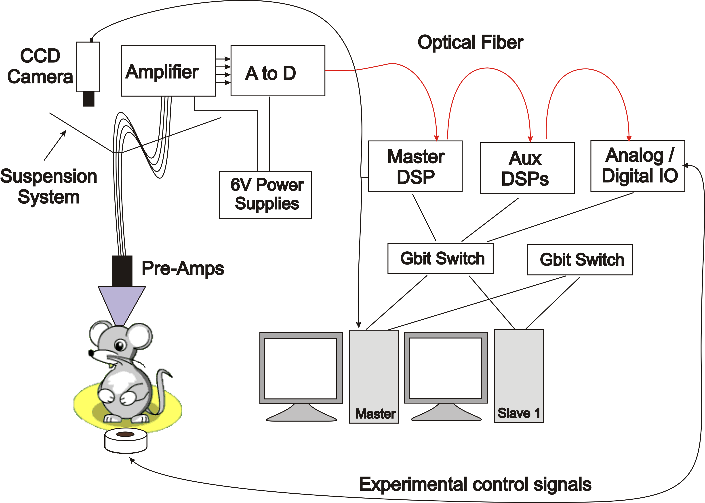
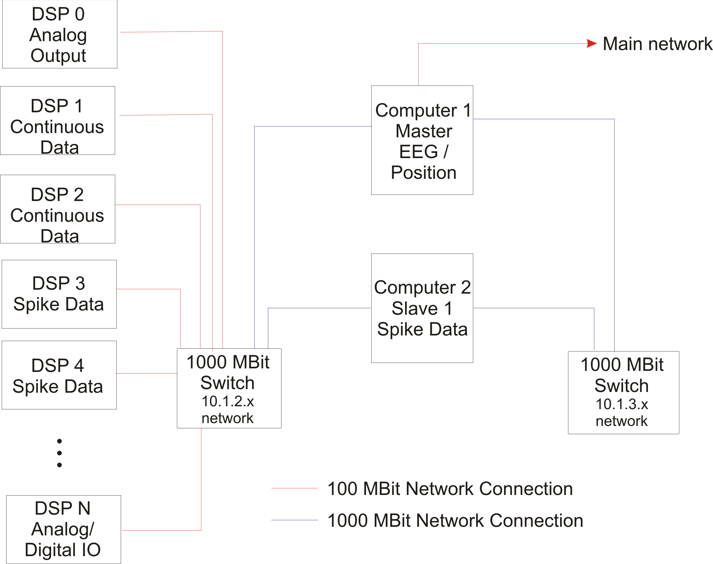
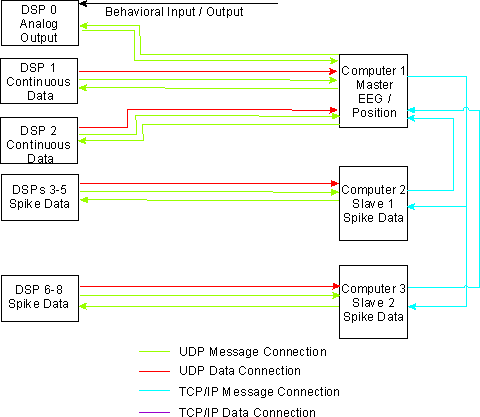
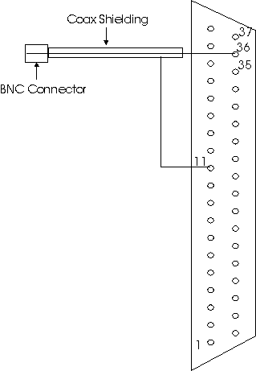
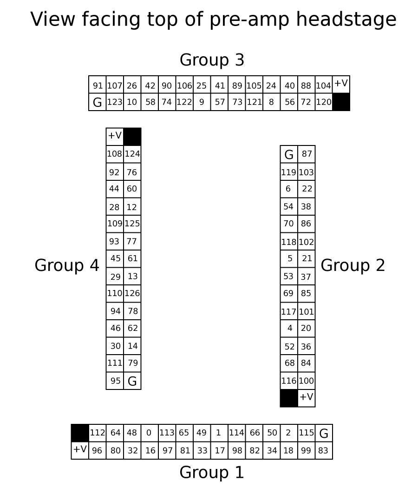
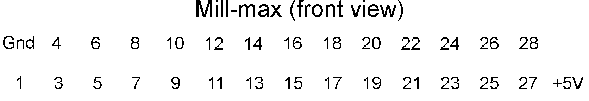
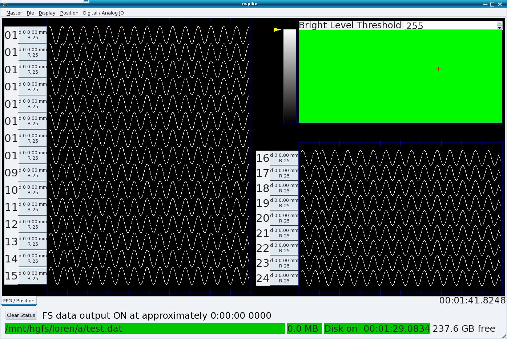
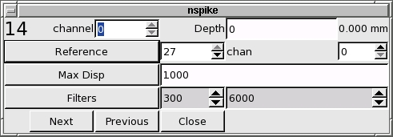
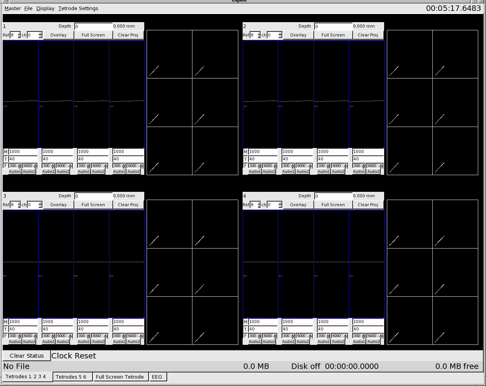

Table of contents
Overview
NSpike
NDAQ Hardware Overview
NSpike
Computer Hardware Overview
Things to
Buy
Computer
Hardware Requirements
Connecting
the Data Acquisition System and the Computers
Building
the Clock Cable
Connecting
the Data Acquisition System components
Connecting
the Computers
Networking
Setup
Kernel Networking
Setup
Direct Rendering
Check
Istalling
and Compiling the NSpike Code
Running
the NSpike Code
NSpike
Configuration Files
Running
NSpike on One Computer
Running
NSpike on Two Networked Computers
Collecting Data with the NSpike Hardware and Software
Setting up Your Configuration File
DSP
Channel Mapping
Electmap
Section of Config File
Hostname
and Channel Section of Config File
Master
Menu
File
Menu
Display
Menu
Digital
IO Menu
Position
Menu
Tetrode
Settings Menu
Status Information
Continuous
Mode Display
Spike Mode Display
Extracting
Data from NSpike
Working
with Extracted Data
Troubleshooting
Working
with the NSpike Code
Overview
This
is the documentation for the NSpike Neural Data Acquisition hardware
and associated open source software. This documentation includes
descriptions of the data acquisition front end (the amplifier,
digitial to analog converter, DSP processors and digitial
input/output system) as well a set of instructions for setting up a
network of computers to run the nspike data acquisition software.
The software and hardware supports position data, continuous data
at 30 KHz per channel across up to 127 channels, combined continuous /
spike snippet data acquisition, digital input and output as well as
analog output.
Conventions: Instructions are in normal typeface, while
commands that should be typed into a terminal window or into a file
are in fixed width typeface.
Directories are in bold face.
NSpike
NDAQ Hardware Overview
The NDAQ hardware system
consists of the following:
127 channel amplifier
Amplifies both neural and, if desired, higher level signals, transmits data to
127 channel analog to digital converter
Samples the amplified data at 30 KHz, 16 bits per sample, transmits data via optical fiber to
Master DSP
Maintains sample counter,
outputs 10 KHz square wave for synchronization, outputs two analog
channels for audio monitor / oscilloscope, passes data to
Auxillary DSPs
Each Aux DSP processes up to 16 channels of data. A user
selectable reference is subtracted from each channel, the result is
filtered, decimated if so desired, and sendt out in UDP ethernet
packets (each containing a fixed number of samples from each channel)
to one computer. The Aux DSPs can also pass data to
NSpike
Computer Hardware Overview
The NSpike software package
is designed to run on 1 or more computers. For the purpose of these
instructions, we are assuming that are two computers, although
additional slave computers can be added. The computers consist of
1 main computer and 1
slave computer1.
These instructions should generalize to an
arbitrary number of slave computers, as long as there is exactly one
master computer. Each computer handles part of the data processing,
displaying or saving as described below.
Tasks are divided among the computers as follows:
The slave computer(s)
process, save and display from one or more aux DSPs
The master computer
processes, saves and displays continuous data from one or more aux DSPs
controls the Master DSP
controls file I/O and data acquisition for all computers
processes, saves and displays position data (video) from the a framegrabber
Things to
Buy
You need to purchase or make
Five 6 - 12' BNC cables
Two BNC T connectors
An audio monitor (we recommend buying a powered speaker with a volume control (total cost ~$350) rather than spending $1200 or so on a Grass Audio Monitor; it's cheaper and the sound is better)
A two channel oscilloscope (if desired)
Cables to connect the preamplifiers on the animal to the amplifier
One or more black and white CCD cameras for position monitoring
Preamps (if you would like simple and cheap 27 channel preamps, email Loren)
Computers (see below)
Computer
Hardware
Requirements
The computer hardware consists of a
minimum of two computers (we use either two or three) and several
auxillary devices. Below are recommended specifications:
Computer
specifications:
Fast processor (> 2
GHz),
multiple processor is fine, 32 or 64 bit.
512 MB RAM minimum
high-performance accelerated graphics card (e.g. NVidia GeForce)
One reasonable size hard drive (we suggest > 100 GB)
DVD-ROM drive for linux installation
19" or larger LCD monitor.
Gigabit ethernet
The master must have three gigabit ethernet cards
Slaves must have two or more gigabit ethernet cards
If you want to include video, you will also need
One frame grabber card compatible with the v4l2 standard (e.g., Hauppage WinTV-GO card, http://www.haupppage.com).
BNC Cables and a BNC to RCA adapter to connect your camera to the Master DSP and from the Master DSP video output to the framegrabbler card.
Other devices
Two gigabit ethernet switches, one 16 port and one with 4 or more ports.
The first will be used for data from the DSPs.
The second will be used for communications between computers.
Do not use a hub, as it is essential that packets get routed to their destination and are not seen by other systems.
One KVM switch to allow you the use of a single keyboard and mouse (and monitor, if you prefer)
One keyboard
One mouse
Ethernet cables
For a 128 channel system (8 aux DSPS) you will need a total of 15 short (5-10 foot) Cat 5e or Cat6 ethernet cables plus a single cable to connect the Master to the rest of your network.
Connecting the Data Acquisition System and the Computers
The diagrams below
shows
the overall organization of the data acquisition system as it is used
in our lab, including the networking setup and the resulting data
flow. Note that the data flow is for separate spike and
continuous data channels. The software also supports full 30 KHz
continuous data sampling across all channels, in which case continuous
data would be sent to either both master and slave or just the slave
computer.

Network
Connections:

Data
Flow:

Building
a Clock Cable
If you want to synchronize your system with some other hardware you can do so witha clock cable that connects the 10 KHz output of the Master DSP to a counter (e.g. a PCI-CTR05 card) in some other computer. Take a 6 foot or longer BNCcable, chop off one end, and strip the other so that you have access to both the signal and ground lines. Solder the lines to the female DB37 as follows:

Use
hot glue gun glue to cover the solder cups of all of the pins of the
connector after soldering to pin 36 and wrap aluminum foil around the
back of the connector and the BNC cable. You may want to fill the
space around the back of the connector with hot glue. Make sure the
foil makes good contact with the shielding of the cable and the metal
outside of the connector. Finally, wrap the foil with electrical
tape. If you have synchronization problems, check the shielding of
the cable.
Connecting the Data
Acquisition System components
Additional specifications can be
found in NSpike_NDAQ_Setup.doc.
Amplifier
/ Analog to Digital Converter Boxes:
The amplifier and the A/D
box should be eventually placed in or at the ceiling, but for initial
testing purposes we recommend putting them on a table top. The back
of the Amplifier box has four 50 pin SCSI connectors on it and one
input for a power cable. Make sure the power supply is off and attach
the bare wire end of the power cable to the one of the 6V power
supplies and the other to the Amplifier box. Repeat for the A/D
box. Plug one SCSI cable into each connector on the Amplifier box and
attach the other end of each cable to the A/D box. Make sure output 1
from the Amplifier connects to input 1 on the A/D box, output 2 goes
to input 2 and so on.
The Amplifier box has four rows of
connectors on the front panel. These can be either Mill-max
connectors (2x15 pins) and SMA connectors or DB-37 connectors. Here
we assume you have the Mill-max version, each of which carries 27
channels of data, +5V and ground. The other connectors can be
connected to either neural signals or line level signals (+/- 5V) but
the amplitude ranges must be specified when you order the system. The
pin numbers for each Mill-max and the mapping to the DSP channels is
given in Appendix 1. Plug your fine wire cables into the Mill-max
inputs.
Plug the long fiber optic cable into the TX fiber
optic connector on the A/D box.
DSPs:
Plug the other end of the long fiber optic cable into
the RX fiber optic connector on the Master DSP box. Use a short
fiber optic cable to connect the TX connector of the Master DSP box
to the RX connector of the Aux DSP box. Using another short fiber
optic cable, connect the TX connector of the Aux DSP box to the RX
connector of the Analog/Digital IO box. Connect the power
supplies
for the DSP boxes. Use Cat5, Cat5e or Cat6 ethernet
cables to connect the ethernet ports on the each DSP to the 16 port hub.
Video
If you are
using one camera, run a BNC line from the camera to a T connector
attached to the video sync 1 input on the back of the Master DSP box.
We use two cameras and a switch box that feeds both signals into the
same BNC cable that then goes to both the Master DSP and the Master
computer. At present, this is the only supported way to get two
cameras, so the other video sync input on the Master should be
terminated. Run another
BNC from the free end of the T connector to your frame grabber
card.
Digital / Analog IO
For digitial IO, each of the 37 pin connectors on the Digital/Analog IO
box carries the signal for two 16 bit ports. The pinout can be
found in the DigIOMap.doc word docuement in the Doc directory of the source code.
Connecting the Computers
This document assumes you know how to put the computers together and hook up the KVM switch. Below are the instructions for the networking and clock cable connections.
Master Computer:
There are three ethernet ports on
the master. Generally the number of the corresponding ethernet device
will increase as you move from the top to the bottom of the case, so
the port closest to the top of computer is usually the first ethernet
device (eth0). Plug the cable connecting the Master to the rest of
your network into the first ethernet port. Plug the cable connecting
the Master to the 16 port data hub into the next port (eth1) and the
cable to the smaller, computer only hub into the last port (eth2).
Slave computer(s
Plug the cable connecting each
computer to the 16 port data hub into top port (eth0) and the cable to
the smaller, computer only hub into the last port (eth1).
Installing
Linux
This document assumes some familiarity with
linux installation. The goal of this process is to
Install Linux (we use Mandriva) on each computer
Set up networking
Set the kernel variables related to networking properly
Ensure that accelerated graphics are available (Direct Rendering)
Linux
Installation
Get a DVD withthe latest version of
your favorite distribution (we use Mandriva linux). Start the
installation process. We recommend the following for installation:
Set aside 10 GB for the / (root) partition and 1GB for a swap partition. On the master computer, set aside an additional 6 GB for a /home partition. (NFS will be set up so that all slave computers mount the /home directory that resides on the master computer.) The remaining disk space on each computer should be assigned as a /data partition. I suggest the ext3 file system or some other journaling file system (this is now the standard).
Be sure to install kernel source files.
Install your favorite shell, text editor, etc.
Install X11 and a low overhead window manager (e.g. fvwm or blackbox). You should have XFree86 / Xorgversion 4.3 or later.
With any luck, your installation will correctly set up accelerated networking. If not, you will probably need to go to the NVidia or ATI website and download and install the correct drivers. We use NVidia cards, and the installation process is fairly straight forward, so it is not covered here.
We have found that some versions of the Gnome window cause problems for the software related to some port numbers, so we do not use it. We have not tested KDE, another popular window manager.
Select the Development packages so that you get gcc, the gnu debugger, and so on
Install the Qt and Qt development libraries.
Install the Mesa OpenGL, Glut, and Glut development libraries.
If you cannot find these packages during installation, you can install them later using your distributions software configuration tools (drakconf for Mandrake)
Install the libmpeg2dec librarie if you plan to use collect and video data.
Install xawtv if you plan to collect video data.
Networking
Setup
Set up the network settings as follows. Here we assume
there are two machines: drizzle (the master) and rain (slave 1)
drizzle (master)
eth0
10.1.1.110 #connection to outside world; This is your ethernet
address on your global network
eth1
10.1.2.1 #data connection for DSPs
eth2
10.1.3.1 #local network
netmask
255.255.255.0
gateway your_gateway
(e.g. 10.1.1.1 for us)
name server
your_nameserver (also 10.1.1.1 for us)
rain (slave
1)
eth0 10.1.2.2 #data
connection to DSPs
eth1 10.1.3.2
#connection to drizzle
netmask
255.255.255.0
gateway
10.1.3.1
gateway device eth1
name
server 10.1.3.1
Once the networking setup is
complete, boot each machine into linux.
Edit /etc/hosts on
each machine to include the other machines and the DSPs. It is
best not to put the 10.1.2.x addresses for the computers in the
/etc/hosts file.
/etc/hosts should look something like
this:
127.0.0.1 localhost
10.1.3.1
drizzle
10.1.3.2 rain
10.1.3.3
mist
10.1.3.4 fog
10.1.2.10
dsp0
10.1.2.11 dsp1
10.1.2.12
dsp2
10.1.2.13 dsp3
10.1.2.14
dsp4
10.1.2.15 dsp5
10.1.2.16
dsp6
10.1.2.17 dsp7
10.1.2.18
dsp8
10.1.2.100 dspdio
Kernel Networking
Setup
As superuser, add the following four lines to
/etc/sysctl.conf:
net.core.rmem_max=8388607
net.core.rmem_default=8388607
net.core.wmem_max=8388607
net.core.wmem_default=8388607
Alternatively, you can open /etc/rc.d/rc.local in a
text editor and add the following lines at the end:
sysctl
-w net.core.rmem_max=8388607
sysctl
-w net.core.rmem_default=8388607
sysctl
-w net.core.wmem_max=8388607
sysctl
-w net.core.wmem_default=8388607
These settings increases the socket buffer read and write sizes so that we will not lose data if any of the programs fall temporarily behind.
Direct
Rendering Check
Open up a terminal window and run the
glxinfo program. There should be a line near the top of the output
that says
Direct Rendering: Yes
If
so, try running glxgears and look at the framerate that the program
reports. You should see > 500 frames/sec (ideally you'll see a few
thousand or more).
If not, you need to get it working by installing the correct driver for your card.
NFS
Setup
Now set up the shared filesystems. The home directory
(/home/lorenlab for us) should be exported from drizzle and nfs
mounted by the other systems. The following assumes you are
making these changes in the main text files. You can also make
them using the control panel for your distribution (drakconf for
Mandriva).
Edit /etc/exports on drizzle to be
/home
rain(rw,no_root_sqaush,sync) mist(rw,no_root_squash,sync)
fog(rw,no_root_squash,sync)
/usr/local
rain(rw,no_root_sqaush,sync) mist(rw,no_root_squash,sync)
fog(rw,no_root_squash,sync)
Add the following line to
/etc/fstab on rain, mist, and fog:
drizzle:/home
/home nfs rw,suid,bg 1 1
drizzle:/usr/local
/usr/local nfs rw,suid,bg 1 1
Now set up the data
directory exports so you can copy the data off the system. Edit
/etc/exports on the non-RT slaves to be
/data drizzle(rw,no_root_squash,sync)
Add the following lines to /etc/fstab on drizzle:
mist:/data /mistdata nfs rw,suid,bg
1
1
rain:/data /raindata nfs
rw,suid,bg 1 1
In a terminal window on drizzle, create those directories:
mkdir /mistdata
mkdir
/raindata
Installing and
Compiling the NSpike Code (without DSPs)
The NSpike
code has two debug modes, and you should first get the code working
in the debug modes before you try to interact with the DSPs. Note
that you will need to have set up networking correctly as described
in the computer setup section before the code can be run on multiple
machines. You will also need to have nfs exported /home and
/usr/local directories that are available on all machines. All of the
commands below assume that “.” (the current directory) is in your
path. If it is not, add a “./” before each local command (e.g.
make and configure).
First, unpack the compressed tar archive in the directory where you would like it to live. On our systems we store the source in /home/lorenlab/, so the commands are
cd /home/lorenlab
tar
xvzf NSpike2_x.x.x.tgz
ln -s NSpike2_.x.x.x NSpike
This will create the NSpike2_x.x.x directory, a link called NSpike2 and the various subdirectories. 0
cd into the NSpike/include directory and edit “spike_defines.h” .
Near the top of the file you will see a line that says
#define
NO_DSP_DEBUG
When that line is present (e.g. not commented out) the
code will
compile without the sections that interact with the DSPs. Make sure
this line is not commented out (e.g. it should look exactly as it
does above).
Below that line you will see another line that
says
#define NO_POS_DEBUG
When
that line is present the code will compile without the sections that
interact with the framegrabber card. Make sure that line is not commented out.
Below that there is a line that says
#define DIO_DEBUG
When that line in not commented, all digital IO information is sent to
the terminal window. Leave it uncommented for the moment.
Now return to the nspike base
directory and run the file that generates the configure script:
autogen.sh
The output of that script should be:
Now you are ready to run ./configure
remember to run it as ./configure --bindir=/usr/local/nspike
or as ./configure --bindir=/usr/local/nspike --enable-nspike_fixpos
o create the local Makefile. This depends on having qt
installed,
so if this doesn't work, make sure that the qt and qt development
libraries are installed. Now do
makeallclean
to get rid of old files and
make
to compile the main program. This will compile the nspike code in the NSpike base directory and some, but not all of the code in the Modules subdirectory. You should see a few warnings but no errors. The warnings result from the -Wall compiler flag and can be ignored. If there are errors, they are most likely due to the absence of libraries that are necessary, and you will have to track these down and install them.
NOTE: For reasons that are not clear to me, the make utility does not always properly detect cases when the header files (e.g. spike_defines.h) are changed, so after changing a header file, make sure to do “makeallclean” and then “make” or “makeall”.
Now change to the Modules subdirectory and configure the
makefile:
cd Modules
configure
If
configure gives errors they are once again likely to be due to the
absence of necessary libraries. Once it works it will generates the
local makefile for the modules using Makefile.am as the automake
template file.
If you are not using video you can copy
Makefile.am.novideo to Makefile.am:
cp
Makefile.am.novideo Makefile.am
Now run
automake
make
to compile
the modules.
When both nspike and the modules have been
compiled, go back to the Nspike directory and install the code in /usr/local/nspike
by running the makeallinstall script
as
root. Note that for future reference, the makeall script is available
to compile both nspike and the modules in one command.
cd
/home/lorenlab/Nspike
makeallinstall
Check to see that the follow files exist in /usr/local/nspike (Note that the “*” after each file means that it is executable and is not part of the name):
ls /usr/local/nspike
should
produce a listing like this:
nspike
spike_behav spike_fixpos spike_process_posdata
nspike_matlab
spike_daq spike_matlab spike_rgbcolor
spike_extract
spike_posdaq spike_save_data
Make sure that
/usr/local/nspike is in your path.
The majority of the program configuration is specified in
the
configuration files. nspikeconfig is the default name of the main
configuration file. The various options for each item are given
within that file.
NOTE: at the moment, while it is
possible to save configuration files within the main program, those
saved configuration files can only be edited (and then used) if you
delete the binary characters at the beginning and end. The program
write out all files using the zlib compression library, and the
header and final binary code need to go away if the contents of the
file change. If you edit the file without removing the necessary
characters and then try to run the program with the new
configuration, it will die with a segmentation fault.
To get the program working, you will need to designate a master machine and some number (0-n) of slave machines. That designation, along with port numbers for communication between the machines, is given near the top of configuration file.
If you have 1 or more slaves, note that they will not
begin
acquisition until they recieve a message from the master, and
similarly, exiting from the program requires exiting on the master
machine.
The NSpike directory has a number of example
configuration files which are named “nspikeconfig#”. These files
are internally documented (comments begin with '%') and contain all
of the configuration information to set datatypes, channel numbers,
position tracking variables and behavior / digital IO variables.
Running the Program on One Computer
First
modify
all of the nspikeconfig* files, changing the names of the machine(s)
to fit your local setup. For nspikeconfig1-2, there is only one
machine. For nspikeconfig3-4 there are two machines, so make sure to
change all instances in both files to the two machines on your
network.
Start in the NSpike directory and try the software with
“nspikeconfig1”:
nspike
–config nspikeconfig1
You will
see quite a bit of output, as shown below. This is normal, but
can be changed so that each program sends output to its own
configuration file by changing the #define STATUSFILE in NSpike/include/spike_defines.h.
The module
numbers refer
to numbers for each program defined in NSpike/include/spike_defines.h.
spike_main:
Reading config file
machine num 0,
type 0
Launching modules
spike
main program getting client /tmp/spike_message_16_to_14
spike_daq:
starting
spike_daq: starting
messaging
module 12 starting server
/tmp/spike_message_16_to_12
spike_save_data:
starting messaging
module 14
starting server /tmp/spike_message_16_to_14
module
14 starting display client /tmp/spike_message_14_to_16
spike
main program got client /tmp/spike_message_16_to_14
spike
main program getting client /tmp/spike_message_16_to_12
spike
main program got client /tmp/spike_message_16_to_12
spike
main program getting server /tmp/spike_message_14_to_16
module
12 starting display client /tmp/spike_message_12_to_16
spike
main program got server /tmp/spike_message_14_to_16
spike
main program getting server /tmp/spike_message_12_to_16
spike
main program got server /tmp/spike_message_12_to_16
getting
data server /tmp/spike_data_12_to_16 from 12
sent
message for data server /tmp/spike_data_12_to_16
program
12 got message 8, socket name /tmp/spike_data_12_to_16, protocol 0,
type 1, connection from virga 12 to virga 16
sending
START_NETWORK_SERVER to 14 for 16 to 14 DATA socket
getting
client server /tmp/spike_data_16_to_14 from 16
program
14 got message 7, socket name /tmp/spike_data_16_to_14, protocol 0,
type 1, connection from virga 16 to virga 14
sending
START_NETWORK_SERVER to 14 for 12 to 14 DATA socket
sending
START_NETWORK_CLIENT to 12 for 12 to 14 DATA socket
Waiting
for CONNECTION_ESTABLISHED message on 14
got
CONNECTION ESTABLISHED message from 14
program
14 got message 7, socket name /tmp/spike_data_12_to_14, protocol 0,
type 1, connection from virga 12 to virga 14
Waiting
for CONNECTION_ESTABLISHED message on 12
program
12 got message 8, socket name /tmp/spike_data_12_to_14, protocol 0,
type 1, connection from virga 12 to virga 14
program
12 got message 2, socket name , protocol 0, type 0, connection
from
0 to 0
program 12 sending out
CONNECTION ESTABLISHED message to main program
Finished
establishing messaging in program 12
program
14 got message 2, socket name , protocol 0, type 0, connection
from
0 to 0
program 14 sending out
CONNECTION ESTABLISHED message to main program
Finished
establishing messaging in program 14
got
CONNECTION ESTABLISHED message from 12
Finished
establishing messaging in program 16
Sending
system config
QLayout "unnamed"
added to SpikeMainForm "unnamed", which already has a
layout
Programming DSPs
Programming
Master DSP
Programming Aux DSP
1
Programming Aux DSP 2
Programed
DSPs
Status message: Clock
Reset
Starting
acquisition
Acquistion started
You
should now have a simulated EEG display with 24 channels. Every
channel should have a 8 or so Hz sinewave on it. If it doesn’t
work, the problem is likely to be in your modification to the config
file, and you should carefully look through the output of the program
to identify any errors it caught. To quit, select "Quit"
from the Master menu.
Similarly,
nspike2
–config nspikeconfig2
should bring up a simulated
spike display with four tetrodes per screen (6 total) and the
opportunity to switch between spiking and continuous modes using the
tabs near the bottom of the window. The data are once again a
simulated sine wave, so the spike windows show the part of the sine
wave above threshold.
Running
the Program on Two Networked Computers
Now you should
test the networking between machines. Run
nspike
–config nspikeconfig3
on both the master and a slave
machine (the names must, of course, match the names you put into
nspikeconfig3, and you will need to run it from a directory where you
can see spikeconfig3 on both machines e.g. /home/lorenlab/NSpike for
us). You should see 8 channels of EEG on the master and simulated
spike data on the slave.
Finally, try
nspike –config nspikeconfig4
on
the master and
You should get a position and EEG display on the master.
Collecting Data with the NSpike Hardware and
Software
Setting up Your
Configuration File
As discussed above, the
configuration files set most of the parameters associated with data
collection. The remaining parameters (e.g. the number of points
to collect when a threshold crossing is detected) are defined in the
spike_defines.h file in the include subdirectory. If you
want to change those parameters, substantial recoding of a number of
files will be required.
An example of an actual
configuration file for a microdrive with 8 tetrodes (6 spike
tetrodes, one eeg tetrode, and one reference tetrode) is in the
franklab8tetconfig file. This configuration file sets the
master (snow) to display 7 channels of EEG data (one channel from
each tetrode with the exception of the reference), position data from
the frame-grabber on the rtslave (graupel) and behavioral data
(digital I/O) from the UEI card on graupel. Hail, the non-rt
slave, processes spike data from the 6 spike tetrodes (24 channels of
data total). Here we go through the most complex parts of the
configuration file, the mapping from the tetrodes on the animal to
the dsp channels and the specification of channels for each
machine.
To understand the mapping it is important to know
that each channel of input on the front end Amplifier box corresponds
to 1 of 127 channels on the fiber optic bus. These channels
(refered to as DSP channels) are numbered 0 to 126, and each Aux DSP
has access to all of these channels and can filter and send out up
data from and arbitrary set of up to 16 of these channels at 30 KHz
per channel (the fixed sampling rate of the A/D box). The
"electmap" lines in the configuration file define the
relationship between individual input channels and DSP channels.
This mapping is given in the DSP Channel Mapping section
below.
DSP Channel Mapping
Looking
down into the inputs to the preamplifies, the dsp channels for each
pin on each Mill-max connector are as follows:

Notes:
The above mappings can also be applied to the connectors on
the top of the microdrive array, omitting the +V pin which only goes
into the preamplifier.
The Group Number corresponds to the
number of the row of connectors (Mill-max and SMA or a single
DB-37) on the front of the Amplifier box.
The J1-8
designations refer to the SMA connectors on the front panel of the
Amplifier box.
DSP Channel 127 is the block count, which
counts the high work of the current sample number (16 bit). This
channel is used by the DSPs to remain synchronized and is not used
for neural data.
Alternatively, from the
front of the Amplifier box, the Mill-max pin numbers and their
associated DSP channls are as follows:

|
DSP Channel |
Group Number |
Mill-max |
|
00 |
1 |
22 |
|
01 |
1 |
14 |
|
02 |
1 |
6 |
|
03 |
1 |
J1 |
|
04 |
2 |
22 |
|
05 |
2 |
14 |
|
06 |
2 |
6 |
|
07 |
2 |
J1 |
|
08 |
3 |
22 |
|
09 |
3 |
14 |
|
10 |
3 |
6 |
|
11 |
3 |
J1 |
|
12 |
4 |
22 |
|
13 |
4 |
14 |
|
14 |
4 |
6 |
|
15 |
4 |
J1 |
|
16 |
1 |
21 |
|
17 |
1 |
13 |
|
18 |
1 |
5 |
|
19 |
1 |
J4 |
|
20 |
2 |
21 |
|
21 |
2 |
13 |
|
22 |
2 |
5 |
|
23 |
2 |
J4 |
|
24 |
3 |
21 |
|
25 |
3 |
13 |
|
26 |
3 |
5 |
|
27 |
3 |
J4 |
|
28 |
4 |
21 |
|
29 |
4 |
13 |
|
30 |
4 |
5 |
|
31 |
4 |
J4 |
|
32 |
1 |
23 |
|
33 |
1 |
15 |
|
34 |
1 |
7 |
|
35 |
1 |
J7 |
|
36 |
2 |
23 |
|
37 |
2 |
15 |
|
38 |
2 |
7 |
|
39 |
2 |
J7 |
|
40 |
3 |
23 |
|
41 |
3 |
15 |
|
42 |
3 |
7 |
|
43 |
3 |
J7 |
|
44 |
4 |
23 |
|
45 |
4 |
15 |
|
46 |
4 |
7 |
|
47 |
4 |
J7 |
|
48 |
1 |
24 |
|
49 |
1 |
16 |
|
50 |
1 |
8 |
|
51 |
1 |
J5 |
|
52 |
2 |
24 |
|
53 |
2 |
16 |
|
54 |
2 |
8 |
|
55 |
2 |
J5 |
|
56 |
3 |
24 |
|
57 |
3 |
16 |
|
58 |
3 |
8 |
|
59 |
3 |
J5 |
|
60 |
4 |
24 |
|
61 |
4 |
16 |
|
62 |
4 |
8 |
|
63 |
4 |
J5 |
|
64 |
1 |
26 |
|
65 |
1 |
18 |
|
66 |
1 |
10 |
|
67 |
1 |
J8 |
|
68 |
2 |
26 |
|
69 |
2 |
18 |
|
70 |
2 |
10 |
|
71 |
2 |
J8 |
|
72 |
3 |
26 |
|
73 |
3 |
18 |
|
74 |
3 |
10 |
|
75 |
3 |
J8 |
|
76 |
4 |
26 |
|
77 |
4 |
18 |
|
78 |
4 |
10 |
|
79 |
4 |
4 |
|
80 |
1 |
25 |
|
81 |
1 |
17 |
|
82 |
1 |
9 |
|
83 |
1 |
1 |
|
84 |
2 |
25 |
|
85 |
2 |
17 |
|
86 |
2 |
9 |
|
87 |
2 |
1 |
|
88 |
3 |
25 |
|
89 |
3 |
17 |
|
90 |
3 |
9 |
|
91 |
3 |
1 |
|
92 |
4 |
25 |
|
93 |
4 |
17 |
|
94 |
4 |
9 |
|
95 |
4 |
1 |
|
96 |
1 |
27 |
|
97 |
1 |
19 |
|
98 |
1 |
11 |
|
99 |
1 |
3 |
|
100 |
2 |
27 |
|
101 |
2 |
19 |
|
102 |
2 |
11 |
|
103 |
2 |
3 |
|
104 |
3 |
27 |
|
105 |
3 |
19 |
|
106 |
3 |
11 |
|
107 |
3 |
3 |
|
108 |
4 |
27 |
|
109 |
4 |
19 |
|
110 |
4 |
11 |
|
111 |
4 |
3 |
|
112 |
1 |
28 |
|
113 |
1 |
20 |
|
114 |
1 |
12 |
|
115 |
1 |
4 |
|
116 |
2 |
28 |
|
117 |
2 |
20 |
|
118 |
2 |
12 |
|
119 |
2 |
4 |
|
120 |
3 |
28 |
|
121 |
3 |
20 |
|
122 |
3 |
12 |
|
123 |
3 |
4 |
|
124 |
4 |
28 |
|
125 |
4 |
20 |
|
126 |
4 |
12 |
|
127 |
|
Block count |
Electmap Section of Config File
The electmap section of franklab8tetconfig is shown below:
%
electrode channel# dsp_channel
electmap
1
0
96
electmap
1
1
80
electmap
1
2
32
electmap
1
3
16
electmap
2
0
112
electmap
2
1
64
electmap
2
2
48
electmap
2
3
0
electmap
3
0
97
electmap
3
1
81
electmap
3
2
33
electmap
3
3
17
electmap
4
0
113
electmap
4
1
65
electmap
4
2
49
electmap
4 3
1
electmap
5
0
98
electmap
5
1
82
electmap
5
2
34
electmap
5
3
18
electmap
6
0
114
electmap
6
1
66
electmap
6
2
50
electmap
6
3
2
electmap
7
0
99
electmap
7
1
83
electmap
8
0
115
There is one entry (row) for each electrode wire that is connected to the input side of your preamp. The ground is pin 2 of the mill-max connector, and is hard wired.
The electrode number column contains the numbers you have assigned to your tetrodes. This must start with 1, but all other numbers are 0 based. It should be possible to skip electrode numbers, although we have not tested this.
The channel number column indicates the channel (eg. wire) within each tetrode. For tetrodes that will be used for spike data there are a total of 4 channels (0, 1, 2 and 3). For us, EEG tetrodes have two connected channels (e.g. tetrode 7, channels 0 and 1) and reference tetrodes have a single channel (e.g. tetrode 8, channel 0).
The
DSP
channel number column indicates the number of the dsp channel that
contains data from the specified channel of the specified
electrode.
This is derived from the channel map above.
Hostname
and Channel Section of Config File
The next sections
of the file specify the order in which channels are to be processed
and displayed on each machine.
Each machine that gets data
from the dsp should have it's own section that begins with
hostname
machine_name
Follwing that line, there should be a set
of channel definitions. The first line of each definition is
the channel number, which specifies where this channel will be
displayed on the computer. \
Channel numbers
Must start at 0
Must not skip any numbers
Thus, for the seven channels of EEG data processed by the
master
machine in franklab8tetconfig, the channel numbers go from 0 to
6.
If you are collecting EEG/LFP data, each tetrode should
have a single entry where you have chosen a single channel from that
tetrode for EEG data. If you specify multiple channels from the
same tetrode the data will not extract correctly, so ...
don't.
Channel 1 is specified as follows:
channel 1
dspnum
1
dspchan
112
refelect
8
refchan
0
number
2
electchan
0
depth
0
thresh
40
maxdispval
1000
filter
300
6000
color
0
This means that
the second trace (channel 0 is the first trace) that will be
displayed will be processed by dsp 1 and corresponds to tetrode 2,
channel 0, which is dsp channel 112.
If you are collecting
spike data from tetrodes, each set of four channels (in order) should
correspond to the four channels from a single tetrode, and thus they
should all have the same
number
entry but should have electchan numbers
that are 0, 1, 2 or 3.
e.g.
%
tetrode 1
channel
0
dspnum
2
dspchan
96
refelect
8
refchan
0
number
1
electchan
0
...
channel
1
dspnum
2
dspchan
80
refelect
8
refchan
0
number
1
electchan
1
...
channel 2
dspnum
2
dspchan
32
refelect
8
refchan
0
number
1
electchan
2
...
channel 3
dspnum
2
dspchan
16
refelect
8
refchan
0
number
1
electchan
3
...
These
channels should also all have the same depth (and, for scientific
reasons, the same filter settings) but can have different thresholds,
maximum displayed values, and colors.
Menus
Master
Menu Items (Available only on the Master machine):
Toggle Acquisition
Turns acquisition on or off. Disabled when data are being saved
Clear All
Clears the screens, including the projection windows, on all non-rt machines.
Start All Save / Stop All Save
Starts or stops saving data to disk on all systems
Open All Files / Close all Files
Opens or closes files on all systems
Save Config File
Writes a config file with all current settings to disk. You can then start nspike with this configuration file to pick up where you left off. Note that if you want to edit this file by hand, you must remove the binary characters at the beginning and end.
Reset Clocks
Resets the sample counter on the master DSP and the RT system.
Test Sync
Checks the sample count and the time on the RT system and reports agreement or disagreement.
Audio Settings
Brings up a window that allows for control of the master DSPs analog outputs:
Linked determines whether the two channels share settings
The gain determines the digital multiplier applied to the signal before it is converted to analog.
The cutoff determines the value for a digital diode-emulator which will remove any signals below the cutoff and reduce the magnitude of signal above the cutoff by the cutoff. This emulates the noise reduction switch on Grass Audio monitors.
Mute turns off the analog output.
The delay is the delay in ms for the analog output signal in case you want to better synchronize the audio and the display. We have found this unnecessary.
Close closes the window.
Note that to listen to or view a channel from one of the Analog outputs of the Master DSP you will need to select that channel from the tetrode window screen.
Quit
Exits out of NSpike on all systems. This is only available if there is no open file.
File Menu
Items (Available on all machines):
Local Start Save / Local Stop Save
Turns on or off saving to disk on this machine only.
Open Local File / Close Local File
Opens or closes a data file on this system only.
Display Menu Items (Available
on all machines):
Redraw
Redraws the current screen without erasing projection windows.
Clear
Redraws the current screen and erases projection windows / spike overlay.
EEG Trace Length
Set the length of the displayed EEG traces in seconds. Minimum 0.000001 sec, maximum 99 seconds.
Digital IO Menu Items
(Available only on digital IO system):
Trigger Output
Turns on a digital output for a length of time and then turns it off. The length of time can be set using the Calibrate Outputs menu item.
Behavioral Programs
Brings up a list of programs, specified in the configuration file, that can be run. These programs establish messaging with either spike_behav (UEI digital IO card on RT system) or with the main program (main DSP digital IO). Example programs can be found in the NSpike/Behavior directory and additional documentation for creating behavior programs is below.
Set Outputs
Allows the user to set the length of time to turn on an output when the Trigger output or Pulse button is pressed. Also allows the user to raise individual outputs.
Send Message to FS Program
Brings up an input window where the user can send a string to the running behavioral program.
Position Menu Items (Available only on position system):
Toggle Position Output
If selected, the current center of mass of tracked pixels is displayed in the status window. The behavioral program gets this information at 30 Hz from the RT system, and this toggle makes it easier to write behavioral programs where outputs are turned on when the animal is in a particular position.
Tetrode Settings Items
(Available only on spike systems):
This menu allows you to tie
together settings across tetrodes, so that a change on one tetrode is
propogated to all tetrodes on this machine.
Common Reference
Propogate changes in the reference to all tetrodes on this machine, and to all other machines that process data from the same tetrodes (e.g. the EEG system)
Common Thresh
Propogate changes in the threshold to all tetrodes on this machine.
Common Max. Disp. Val.
Propogate changes in the maximum displayed value (the value corresponding to a point at the top of the spike window) to all tetrodes on this machine
Common Filters
Propogate changes in the high or low pass filter settings to all tetrodes on this machine.
Time display
The current time is displayed in the upper right hand corner. Note that because there is a slight delay involved in transmitting position frames from the RT system, you may occasionally see an apparent backwards shift in the time. This is not an indication of a problem if you have verified that the systems are synchronized using Test Sync from the Master Menu.
System and File Status
The top gray regions near the bottom of the page displays status messages which can be cleared by clicking on the "Clear Status" message.
The next region displays information about the file, including it's name, current size, the time of the last disk operation, and the amount of free space on the disk.
Window tabs
In spike mode you can toggle between windows displaying either four tetrodes, a single, full screen tetrode, or, if disk is off, a continuous version of the tetrode data.
Continuous
Mode Display
A snapshot of the Continuous / Position
mode looks like this: 
The two sections with sine waves show simulated EEG data, and the upper right section shows simulated position data.
The numbers in large font are derived from the number
specified in the config file.
Each button next to the
number displays
Clicking on a button (e.g. the button for tetrode 14)
brings up
the following window:

This
window allows you to change the settings for this tetrode.
The channel spin box lets you set which channel of the tetrode is being displayed. Thus, you have selected a tetrode with four channels, the channel can be 0, 1, 2 or 3.
The depth allows you to enter the depth in 12ths of a turn of an 0-80 screew and displays the corresponding depth in mm. If you want a different depth conversion, change
The Reference button, when pressed, causes changes in the reference on this channel to be applied to all channels on this machine. When the button is up, as depicted above, reference changes are local to the current channel.
The reference and reference chan spin box allow you to select the reference tetrode and the channel within that tetrode.
Note that changes in the reference for a given tetrode are propogated to all computers, such that a change on one computer automatically changes the reference on all computer.
The Max Disp button and the corresponding input set the size of the trace, in µV. When the button is depressed, the trace size is changed for all channels on this computer, but not for channels on other computers.
The Filter spin boxes determine the high pass and low pass filters. As for the Max Disp button, when the Filter button is depressed, the filter settings are changes for all channels on this computer.
Next and Previous move you to the next or previous channel on this computer.
Close closes the window.
Spike
Mode Display

This
tab of the spike mode window shows four tetrodes at a time. Any
wave form that exceeds the threshold (yellow line) on any one of the
four channels is displayed on all four, and a point representing the
peak amplitude on each pair of channels is plotted in each of the six
projection boxes. The left row of boxes represent channel 0 vs.
1, 0 vs. 2 and 0 vs. 3, while the right row represents 1 vs. 2, 1 vs.
3, and 2 vs. 3.
The top gray area above the waveform
windows shows
Tetrode number (top left)
Depth. Enter depths in 12ths of a turn of an 0-80 screw (top right).
Reference tetrode and channel (bottom left).
Overlay button
If selected, the tetrode waveforms are displayed on top of one another.
Full Screen Button
If pressed, you will switch to the Full Screen Tetrode tab which will display the selected tetrode.
Clear Proj. button
If pressed the projection windows will be cleared.
The bottom gray area below the waveform windows shows the settings for each channel.
The M row shows the maximum displayed value.
The T row shows the threshold for each channel.
The F row shows the high and low pass filters.
When the M, T or F buttons are depressed, changes in the
corresponding setting will be propogated to all channels of the
tetrode. When the buttons are not depressed, changes are local
to the changed channel.
Note that the maximum
displayed value (MDV) sets the size of the traces in both the spike
and projection windows. This setting does not affect data
storage, however, so traces that exceed the MDV are not trucated on
disk, and increases in the MDV will allow a redraw of the projection
windows to include points that were previously too large.
Audio buttons
These buttons allow the user to select the channels that are converted to an analog signal and output from the master DSP.
The left button is for digital output 0 and the right for digital output 1.
Collecting
Data
The following represents the sequence we use to
collect data:
Turn on the power to the Amplifier and the A/D box by toggling the switch on the FlyBat box.
Turn on the power to the DSPs
Start nspike on the master and slaves
Start nspike_rt on the RT system
Select the appropriate
camera.
Note that it is essential to stop acquisition before switching cameras.
Check light levels / position threshold so that only the diodes on the head exceed a threshold (We like a threshold around 225 - 240).
Enter depths on all tetrodes
Check / adjust references, thresholds and filters
Reset clocks
Check time synchronization
Open files on all machines
Start save on all machines
Collect Data
Stop save on all machines
Close files on all machines
...This list could also include
launching behavior programs and/or
triggering digital outputs.
Extracting
Data from NSpike
Once you have finished
collecting data you will need to extract it from the data file or
files. To do so, we usually move the data to its own directory
on a separate workstation. We then run
nspike_extract
-all datafilename
on each data file.
nspike_extract
will give you a list of available options for
extraction.
Working with
Extracted Data
Once extracted, the data are stored in
files with relatively straight forward formats. Note that all
timestamps are in 100 µsec units, so there are 10000 timestamps per
second.
Spike data:
Spike data
are stored in .tt files which are extracted into subdirectores, one
per tetrode. Tetrode #2, at a depth of 110, would be in a file
called 02-110/02-110.tt. Within the tt file there is an ASCII
header which starts with
%%BEGINHEADER
and ends with
%%ENDHEADER
followed by binary records of each spike. Each
spikes is stored as follows:
timestamp unsigned
integeter (32 bit)
data
160 signed shorts
The file readtt.m in the Matlab subdirectory will read in all
of the spikes from a
ttfile.
Continuous Data (EEG or LFP):
Continuous data are stored in a .eeg file, so the data from tetrode
#2 at depth 110 is stored in 02-110.eeg. The continuous data
have a header similar to that of the tt files, followed by data
records with the following format:
timestamp
unsigned integer (32 bit)
nsamples
int
sampling_rate double
samples
nspikes signed shorts
The mex
code readeeg.c in the Matlab directory will read in the eeg data from
a file. Compile within matlab as follows:
mex
-o readeeg readeeg.c fileiomat.c
Position Data:
Position data are extracted to two files, named as the directory
name where the extraction occured (e.g. rat5day1) followed by .mpeg
or .postimestamp. The .mpeg file is a normal mpeg file that can
be played with any mpeg player. The .postimestamp file has the
complete header from the data file followed by a list of timestamps
(all unsigned integers), one for each frame of the mpeg. We use
nspike_fixpos to compute the locations of the large and small diode
arrays on our animals' heads. See the top of spike_fixpos.c for
usage.
Digital IO Data
Digital IO data are extracted in text format to a file that is named
as the currect directory followed by .dio (e.g. rat5day1.dio).
This
corresponds to the -diotext option for extraction. The file
contains two colums. Column 1 is the timestamp and Column 2 is
the state of the all digitial IO lines at that time.
Event
Data
Events (disk on only at this moment)
are written to disk, and the event type is given in spike_defines.h.
Other events will be written to disk in the
future.
Configuration Data
Each datafile also has a header which is the configuration file used
to collect those data. This is extracted to
datafilename.config.
The NSpike code fails to start with an error that indicates there is a problem opening a socket on a particular port.
Solution:
Change the port number in the
config
file to some other unused port and run kspike to kill off the other
processes.
We have had problems with the Gnome window manager not
allowing us to open ports, so you may want to avoid using Gnome for
nspike.
Problem:
The NSpike code fails to start with an error that indicates there is a problem looking up a machine number.
Solution:
Check the config
file to
make sure that the machine on which the error was seen is listed as
either master or a type of slave.
Problem:
The
NSpike code hangs after the line
Programming
DSPs
Solution:
There is an
error
communicating with the DSPs. This probably means that the
network that the DSPs are on is down or that the DSPs are not powered
up. You may need to kill (kspike) and then restart the
software.
Problem:
The NSpike code reports very large numbers of lost packets and / or hangs.
Solution:
This
appears
to occur on some systems and not others, and results from broadcast
messages (usually ARP requests) on the DSP network. If this
happens on your machine, do the following:
Add the following lines
to
sysctl.conf:
net.ipv4.neigh.eth1.mcast_solicit=0
net.ipv4.neigh.eth1.ucast_solicit=1
net.ipv4.conf.default.forwarding=0
where
you replace eth1 with the name of the ethernet interface on each
machine that communicates with the DSPs. Our sysctl.conf is in
the NSpike directory for reference.
Move the setupnet
script to /usr/local/bin (or some other directory in root's
path). Modify the script to select the DSP ethernet interface
on each machine. Become root and run this script each time the
DSPs are turned on.
That combination fixes the problem for us.